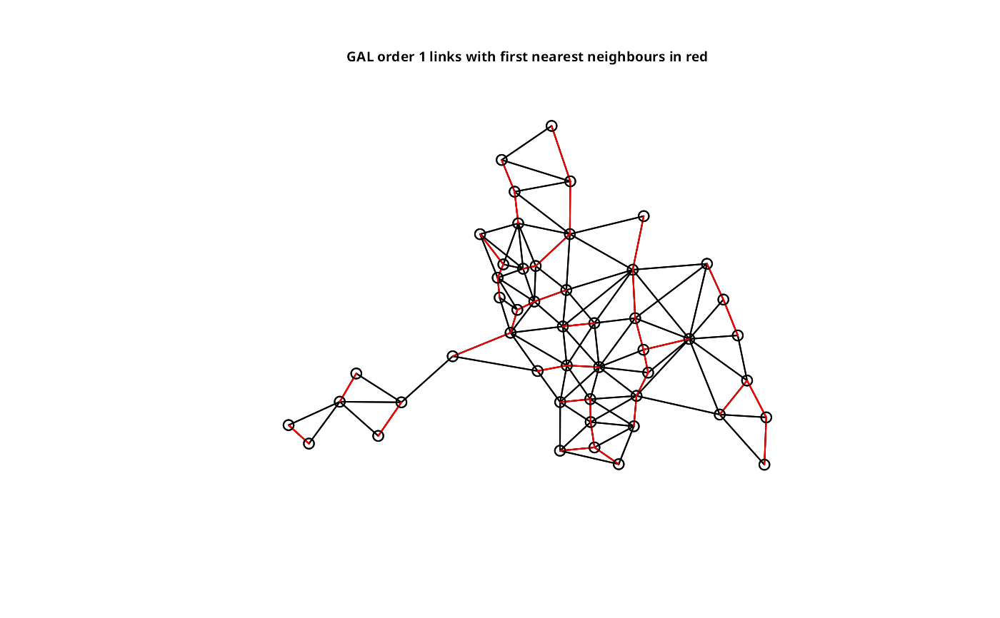
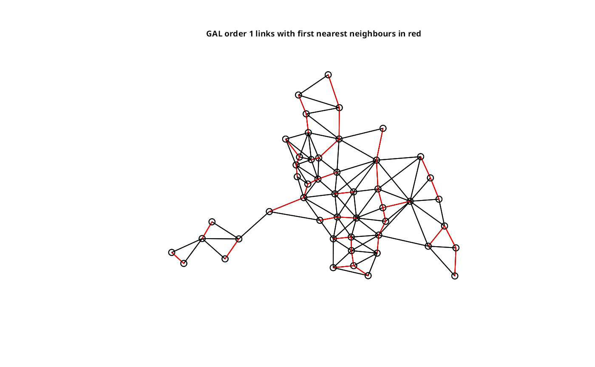

Plot a neighbours list
plot.nb.RdA function to plot a neighbours list given point coordinates to represent the region in two dimensions; plot.listw is a wrapper that passes its neighbours component to plot.nb.
Arguments
- x
an object of class
nbor (forplot.listw) classlistw- coords
matrix of region point coordinates, a
Spatialobject (points or polygons), or ansfcobject (points or polygons)- col
plotting colour
- points
(logical) add points to plot
- add
(logical) add to existing plot
- arrows
(logical) draw arrowheads for asymmetric neighbours
- length
length in plot inches of arrow heads drawn for asymmetric neighbours lists
- xlim, ylim
plot window bounds
- ...
further graphical parameters as in
par(..)
See also
Examples
columbus <- st_read(system.file("shapes/columbus.shp", package="spData")[1], quiet=TRUE)
col.gal.nb <- read.gal(system.file("weights/columbus.gal", package="spData")[1])
plot(col.gal.nb, st_geometry(columbus))
title(main="GAL order 1 links with first nearest neighbours in red", cex.main=0.6)
 plot(col.gal.nb, as(columbus, "Spatial"))
title(main="GAL order 1 links with first nearest neighbours in red", cex.main=0.6)
coords <- st_centroid(st_geometry(columbus), of_largest_polygon=TRUE)
col.knn <- knearneigh(coords, k=1)
plot(knn2nb(col.knn), coords, add=TRUE, col="red", length=0.08)

plot(col.gal.nb, as(columbus, "Spatial"))
title(main="GAL order 1 links with first nearest neighbours in red", cex.main=0.6)
coords <- st_centroid(st_geometry(columbus), of_largest_polygon=TRUE)
col.knn <- knearneigh(coords, k=1)
plot(knn2nb(col.knn), coords, add=TRUE, col="red", length=0.08)
